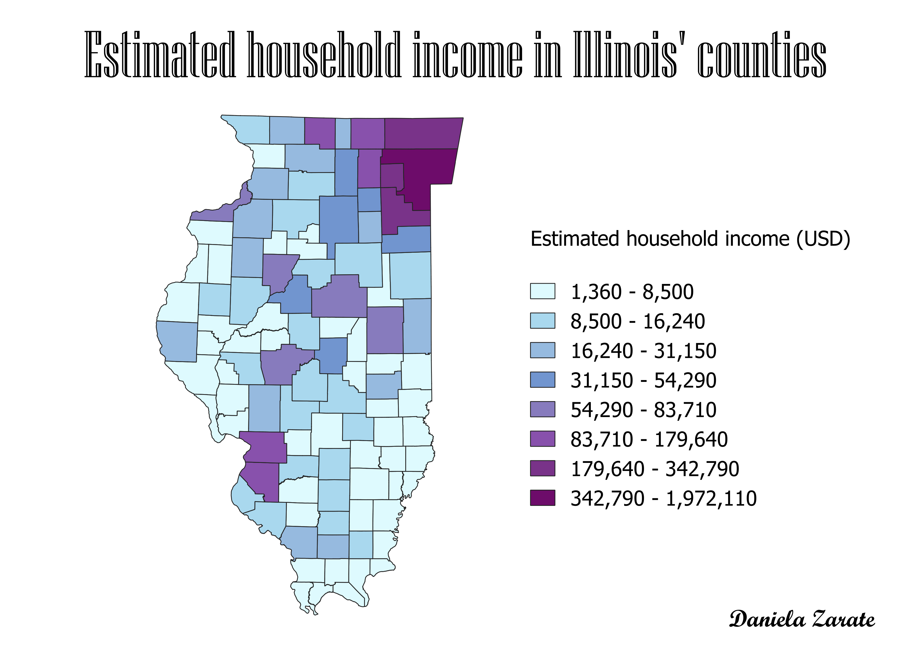

Homework 7: Census data choropleth
Estimated household income in Illinois' counties
In Illinois, the household income ranges from $1,360 to $1,972,110. The average household income in the state of Illinois is $69,187. However, most counties in the state have an estimated household income below poverty line, while a few counties have an estimated household income that is 50 to 1000 times greater than that of the poorest counties.

Data used for this project
CSV dataset
Link to shapefile